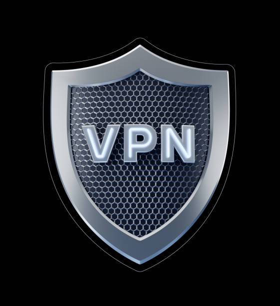
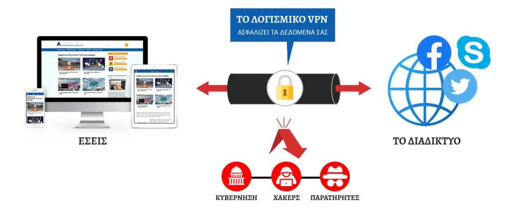

VPN 
Ο στόχος τις ιστοσελίδας είναι για να σε βοηθήσει να κατανοήσεις τις βάσεις του κόσμου των VPN. Σήμερα είναι το πρώτο μάθημα στα VPN: Τι είναι το VPN; Αφού διαβάσετε αυτό το συνοπτικό και ακριβές άρθρο θα ξέρετε τι είναι ένα Εικονικό Ιδιωτικό Δίκτυο. Πιθανότατα δεν θα γνωρίζετε την ακριβή λειτουργία του αλλά θα έχετε μια γενική ιδέα. Εντάξει, τώρα σταματήστε να μιλάτε στους διπλανούς σας, κοιτάξτε εδώ και ας ξεκινήσουμε.
Καταρχήν, ο ορισμός του VPN: Τι είναι μια σύνδεση VPN; Σύμφωνα με τη Βικιπαίδεια (ναι και οι δάσκαλοι χρησιμοποιούν Βικιπαίδεια, τι νομίζετε;) είναι ένα εικονικό ιδιωτικό δίκτυο (virtual private network– VPN) το οποίο επεκτείνει ένα ιδιωτικό δίκτυο σε ένα δημόσιο δίκτυο, όπως το διαδίκτυο. Δίνει τη δυνατότητα στους χρήστες να στέλνουν και να λαμβάνουν δεδομένα σε κοινόχρηστα ή δημόσια δίκτυα σαν να ήταν απευθείας συνδεδεμένες οι υπολογιστικές τους συσκευές με το ιδιωτικό δίκτυο.
Αυτό δεν βοήθησε ιδιαίτερα, έτσι; Ας βρούμε λοιπόν ένα καλύτερο τρόπο να το θέσουμε. Είναι ένα δίκτυο. Και αυτό το δίκτυο είναι εικονικό δεδομένου ότι δημιουργεί μια εικονική γέφυρα μεταξύ του χρήστη (εσύ, για παράδειγμα) και ενός διακομιστή (ο οποίος βρίσκετε οπουδήποτε στη γη). Τέλος, αυτό το δίκτυο είναι ιδιωτικό γιατί για να έχεις πρόσβαση, χρειάζεται να έχεις λογαριασμό με πιστοποιητικά σύνδεσης VPN (όνομα χρήστη και κωδικό πρόσβασης).
Οπότε, συνδέεσαι σε ένα διακομιστή και μετά αυτό ο διακομιστής συνδέεται με το διαδίκτυο για εσένα. Αυτό είναι.
Εάν δεν καταλαβαίνετε μην ανησυχείτε, είναι ακόμα η αρχή. Σύντομα θα γνωρίζεται τι είναι VPN, αλλά τώρα, λίγο για την ιστορία του. Ξέρει κάποιος γιατί δημιουργήθηκαν τα VPN; Ένα στοιχείο: σχετίζετε με επιχειρήσεις… Κανείς;
Αρχικά, εταιρίες δημιούργησαν τα VPN για να προστατεύσουν τις επικοινωνίες τους από την βιομηχανική κατασκοπεία, επειδή υπάρχουν όλο και πιο πολλοί απλοί τρόποι για να παρακολουθήσεις δεδομένα που ταξιδεύουν σε ένα δίκτυο. Έχετε ακούσει για το MAC spoofing και το Firesheep για παράδειγμα; Δύο τρόποι για την εξάλειψη (hack) πληροφοριών.
Αυτός είναι ο λόγος που μέσω VPN προσφέρεται στον κάθε χρήστη μια κρυπτογραφημένη μετάδοση δεδομένων και ένα σύστημα σήραγγας για την ασφαλή δρομολόγηση των δεδομένων μεταξύ αυτών των δύο σημείων, εμπρός και πίσω. Ως αποτέλεσμα τα δεδομένα είναι κρυπτογραφημένα και προστατευμένα.
Η ασφάλεια ακούγεται καλή, σωστά; Και η προστασία της ιδιωτικής ζωής; Καλά νέα: ένα VPN σημαίνει καλύτερη προστασία ιδιωτικής ζωής! Πράγματι, το VPN αντικαθιστά την διεύθυνση IP από τον διακομιστή στον οποίο είσαι συνδεδεμένος και μπορείς να συνδεθείς σε οποιονδήποτε διακομιστή του παροχέα VPN. Ως εκ τούτου, μπορείτε να έχετε πολλές διαφορετικές διευθύνσεις IP. Για παράδειγμα, μπορεί να ζεις στο Λονδίνο και να φαίνεται πως είσαι στη Νέα Υόρκη με τη βοήθεια του VPN.
Συνοψίζοντας, όταν χρησιμοποιείτε VPN: πρώτον, κανείς δεν μπορεί να παρακολουθήσει και να χρησιμοποιήσει τα δεδομένα σας. Δεύτερον, κανείς δεν ξέρει ποιες ιστοσελίδες επισκέπτεστε.
Αλλά αυτά δεν είναι όλα! Πράγματι, υπάρχει ακόμα ένα καλό σημείο που σχετίζεται με τη μέθοδο απορρήτου που περιγράφεται παραπάνω. Η σύνδεση με μια διεύθυνση IP από οποιαδήποτε χώρα σημαίνει ότι μπορείς να ξεκλειδώσεις όλο το γεωγραφικά περιορισμένο περιεχόμενο από τη χώρα στην από την οποία συνδέεστε. Σκευτείτε ότι θέλετε να παρακολουθήσετε το Αμερικανικό Netflix από το σπίτι σου στο Λιντς ή στην Αθήνα. Δεν χρειάζεται να βρίσκεσαι στις ΗΠΑ. Χωρίς VPN, είναι αδύνατο. Αλλά με VPN, μπορείς να συνδεθείς σε έναν αμερικανικό διακομιστή και θα έχετε εύκολη πρόσβαση στο Αμερικανικό Netflix!
Το ίδιο ισχύει και αντίστροφα, εάν είσαι σε ταξίδι στην Κίνα με ένα VPN μπορείς να παρακολουθήσεις το αγγλικό Netflix από το εξωτερικό ή να παρακολουθήσεις Alpha TV. Επιπλέον μπορείτε να ξεμπλοκάρετε περιεχόμενο σε λογοκριμένες ιστοσελίδες όπως το Facebook ή το Twitter.
Οι περισσότεροι δημοσιογράφοι χρησιμοποιούν VPN για να παρακάμπτουν τη λογοκρισία όταν βρίσκονται μακριά. Με αυτόν τον τρόπο μπορούν να μείνουν ελεύθεροι στο ιντερνέτ.
Συνοψίζοντας με ένα VPN μπορείτε να προστατέψετε τα δεδομένα σας και την ιδιωτική σας ζωή και να αποκτήσετε πρόσβαση σε ιστοσελίδες και περιεχόμενο το οποίο είναι συνήθως περιορισμένο.
Μερικά πρωτόκολλα είναι διαθέσιμα σήμερα. Τα πιο συνηθισμένα είναι:
PPTP: ένα από τα πρώτα πρωτόκολλα (περίπου από τα Windows 95)
L2TP/IPsec: ένα από τα πιο ασφαλή πρωτόκολλα με σήραγγα
OpenVPN SSL: το πιο ευέλικτο και δημοφιλές πρωτόκολλο ανοιχτού κώδικα
Όλο και περισσότεροι άνθρωποι χρησιμοποιούν προσωπικό VPN, καθώς στο διαδίκτυο εμφανίζονται όλο και περισσότερες αλληλεπιδράσεις (αγορές, πωλήσεις κλπ). Αυτός είναι ο λόγος που υπάρχουν τόσες πολλές επιλογές όταν πρόκειται για παρόχους VPN.
Σε αυτή την ιστοσελίδα θα βρείτε όλες τις πληροφορίες που χρειάζεστε για να επιλέξετε το καλύτερο VPN. Πράγματι, όλα τα VPN έχουν δοκιμαστεί, εξεταστεί και συγκριθεί. Απλά διαβάστε και επιλέξτε ένα το οποίο ταιριάζει καλύτερα στις ανάγκες σας. Παρακάτω μπορείτε να βρείτε τα 3 καλύτερα VPN για τις περισσότερες χρήσεις, επειδή διαθέτουν αξιόπιστους διακομιστές, αποδεδειγμένη ασφάλεια, ελεύθερο λογισμικό και απαράμιλλη ταχύτητα και ευκολία. Κάνουμε κλικ και το o καθένας έχει πρ΄σβαση στο διαδίκτυο με VPN μέσω μιας απλής internet connection σύνδεσης.
Μερικές εταιρίες προσφέρουν δωρεάν VPN, ενώ οι περισσότερες απαιτούν συνδρομή. Όλα τα δίκτυα τους είναι διαφορετικά και το καθένα έχει συγκεκριμένα χαρακτηριστικά (ταχύτητα, ταυτόχρονες συνδέσεις, τείχος προστασίας-firewall, κόστος, τοποθεσία διακομιστή…).
Τίποτα δεν είναι ποτέ πράγματικά δωρεάν σε αυτό τον κόσμο… Οι αδίσταχτες εταιρίες μπορεί να συλλέγουν τα δεδομένα σας και τις και τις συνήθειες περιήγησής σας ή και χειρότερα. Ακόμα μπορούν να πουλήσουν το εύρος ζώνης σας(bandwidth), ή να τα χρησιμοποιήσουν για κακόβουλο λογισμικό. Η χρήση δωρεάν VPN θα προκαλέσει πολλά προβλήματα, αλλά τώρα είστε ενημερωμένοι: χρησιμοποιήστε ένα δωρεάν VPN με δική σας ευθύνη.
Τώρα ξέρετε τα πάντα για τη σύνδεση VPN και τι ακριβώς είναι ένα VPN. Έχετε έναν απλό ορισμό του VPN.